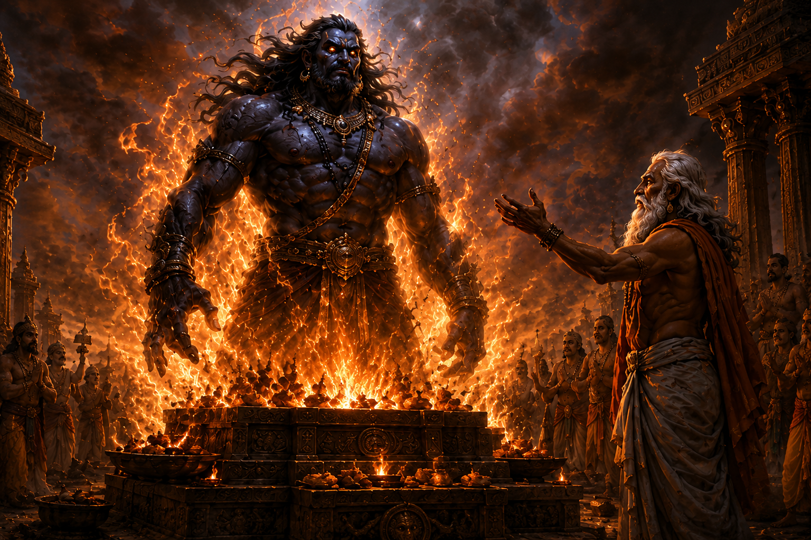
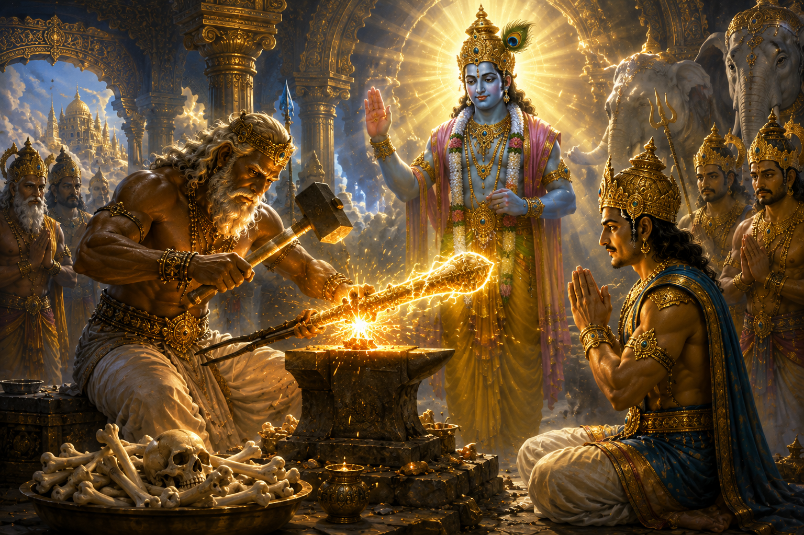
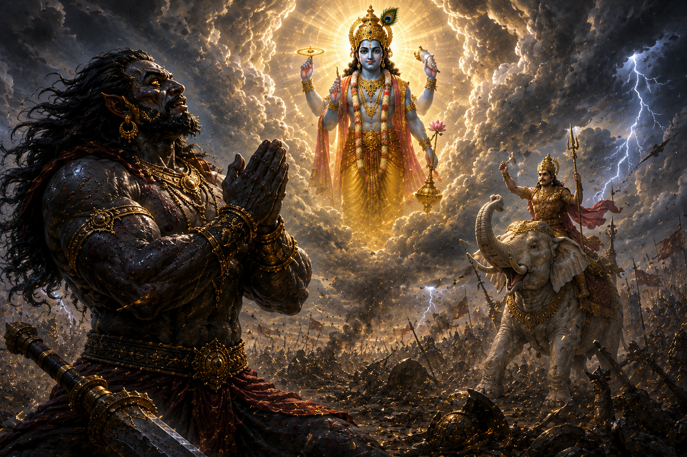
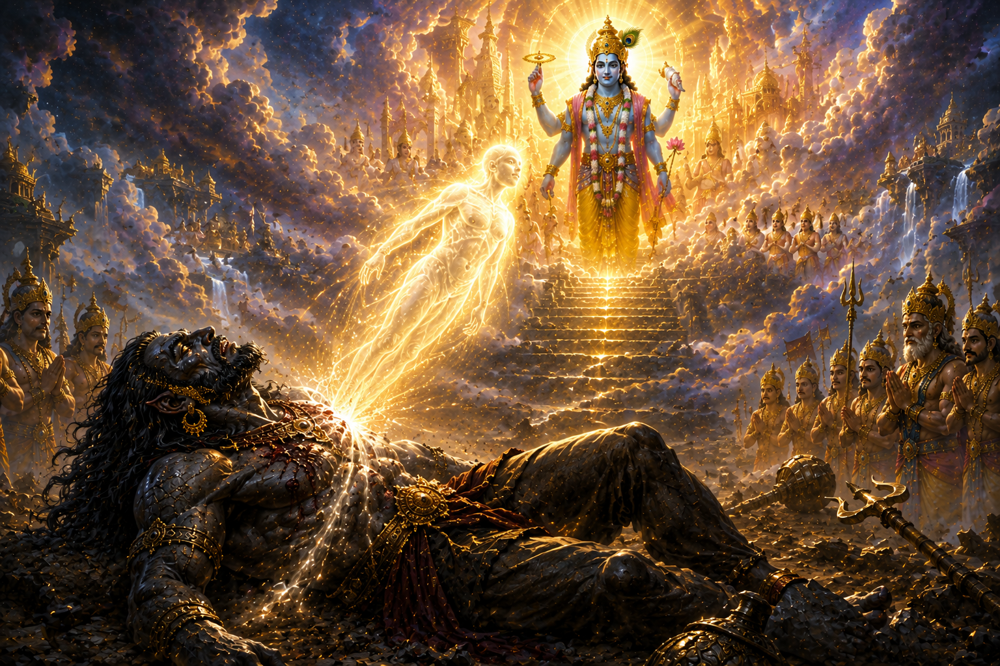

Among the many battles described in the Vedas and the Puranas, the war between Indra and Vritrasura stands as one of the greatest conflicts between the Devas and the Asuras.
It was far more than a clash between two mighty warriors.
It is a profound story of pride, Dharma, sacrifice, penance, forgiveness, and the mysterious workings of the Divine Will.
The story begins long before the birth of Vritrasura himself.
At that time, Indra, the king of the Devas, ruled the heavens with immense power and authority.
Under his leadership, the celestial realms flourished, and the gods lived in prosperity.
One day, however, their spiritual preceptor, Brihaspati, entered Indra's royal assembly.
Blinded by pride, Indra failed to rise from his throne.
He neither welcomed his guru with the respect he deserved nor offered him the customary salutation.
Brihaspati immediately understood that the king of the gods had become intoxicated by power.
Without uttering a single word, he quietly turned and left the assembly.

Only after his pride had subsided did Indra realize the seriousness of his mistake.
He searched everywhere for his guru, but Brihaspati had disappeared.
Without the guidance and blessings of their spiritual teacher, the brilliance and strength of the Devas gradually began to fade.
The Asuras seized this opportunity.
Led by their own guru, Shukracharya, they launched a powerful assault upon the heavenly kingdom.
Bereft of their guru's protection, the Devas were unable to withstand the attack.
Defeated and humiliated, they sought refuge before Lord Brahma and pleaded for his guidance.
Brahma replied,
"This suffering is the consequence of your own pride. Go now and appoint Vishvarupa, the son of the sage Tvashtha, as your priest. Under his guidance, your strength shall be restored."
The Devas accepted Brahma's instruction and invited Vishvarupa to become their priest.
Vishvarupa was a learned Brahmana of extraordinary spiritual power and austerity.
Yet his mother belonged to the Asura lineage.
For that reason, he felt compassion for both the Devas and the Asuras alike.
Although he performed sacred sacrifices for the Devas, he secretly offered a portion of the sacrificial oblations to his Asura relatives.
Eventually, Indra discovered the truth.
Consumed by anger, he acted without reflection.
With his thunderbolt, the Vajra, he severed all three heads of Vishvarupa.

Because Vishvarupa was a Brahmana, Indra immediately incurred the terrible sin of Brahmahatya—the killing of a Brahmana.
When Vishvarupa's father, the great artisan-sage Tvashtha, learned of his son's death, he was overwhelmed by grief and righteous anger.
He resolved to create a being powerful enough to destroy Indra himself.
Tvashtha began an immense sacrificial ritual.
As he poured offerings into the sacred fire, he invoked the birth of a mighty avenger.
From the blazing flames emerged an enormous being of terrifying power.
His body towered like a mountain.
His roar shook the heavens and the earth.
Even the Devas trembled at the sight of his overwhelming radiance.
Tvashtha gave him the name Vritra, who would later become famous as Vritrasura.

Vritrasura had been created for one purpose alone—
to avenge the death of Vishvarupa and punish Indra for his arrogance.
Meanwhile, Indra also learned that an enemy unlike any he had ever faced had come into existence.
What he did not yet realize was that he was about to enter a conflict that would cost him not only his heavenly kingdom, but also his pride, his confidence, and nearly his very life.
With each passing day, Vritrasura grew stronger.
His spiritual power, valor, and austerity became so extraordinary that even the Devas began to fear him.
Before long, he assembled a vast army of Asuras and launched a full-scale invasion of the heavenly kingdom.
Mounted upon his divine elephant Airavata, Indra marched into battle at the head of the celestial armies.
A terrible war erupted between the Devas and the Asuras.
Weapons as mighty as mountains were hurled across the battlefield.
The heavens were filled with countless arrows.
Indra unleashed many of his divine weapons against Vritrasura, yet none of them inflicted any lasting harm.
With overwhelming strength, Vritrasura shattered the formations of the celestial army.
The Bhagavata Purana and several other Puranic texts describe how he rendered Indra's divine weapons ineffective and forced the Devas to retreat from the battlefield.

The Devas were utterly defeated.
Even Indra was unable to defend the heavenly kingdom.
Vritrasura seized control of Svarga, while the defeated Devas scattered in every direction, seeking refuge.
It was one of the darkest moments in the history of the celestial worlds.
Once again, the Devas approached Lord Brahma.
Brahma then led them to Lord Vishnu, seeking a solution to the growing crisis.
With folded hands, the Devas prayed,
"O Lord, Vritrasura has become invincible. Every weapon we possess has failed against him. Please show us a way to protect the worlds."
Lord Vishnu replied with calm certainty,
"Vritrasura cannot be slain by any ordinary weapon. A divine weapon must be forged, and it can be created only from the bones of the great sage Dadhichi."
The entire assembly fell silent.
The sage Dadhichi was one of the greatest ascetics and realized souls of his age.
To ask for his bones was, in effect, to ask him to willingly give up his own life.
Nevertheless, for the protection of Dharma and all living beings, the Devas resolved to visit his hermitage.

They bowed before the great sage and explained their plight with deep humility.
"Revered Sage, all the worlds are in danger. Lord Vishnu has declared that only a weapon forged from your sacred bones can defeat Vritrasura. We come before you seeking a gift that we are ashamed even to ask."
Dadhichi smiled peacefully.
He answered,
"If this body can serve the welfare of the world, what greater fortune could there be? One day this body must perish regardless. If by sacrificing it the Devas, the sages, and all living beings may be protected, I offer it gladly."
Having spoken these words, the great sage entered deep meditation.
Through the power of Yoga, he voluntarily relinquished his mortal body.
The Devas received his sacred bones with profound reverence.
The divine architect Vishvakarma then forged from those bones one of the most extraordinary weapons ever created.
It was the Vajra.

The Vajra was far more than a weapon.
It became an eternal symbol of self-sacrifice, righteousness, and the willingness to give everything for the welfare of others.
Lord Vishnu infused the weapon with His own divine power.
Then He said to Indra,
"The time has come. Take up the Vajra and return to battle. The victory of Dharma is certain."
Indra accepted the divine weapon with folded hands.
He was no longer the proud king who had once ignored his own guru.
Defeat, humiliation, and separation from Brihaspati had transformed him.
He now understood that victory would not come through his own strength alone, but through the grace of Lord Vishnu and the incomparable sacrifice of Sage Dadhichi.
Once again, the celestial armies assembled.
Armed with renewed faith and divine purpose, the Devas marched toward the battlefield to confront Vritrasura one final time.
The stage was now set for one of the greatest wars ever described in the Puranas.
The celestial armies assembled once more upon the battlefield.
This time, Indra held in his hand the divine Vajra, forged from the sacred bones of the great sage Dadhichi and empowered by Lord Vishnu Himself.
Across the battlefield stood Vritrasura, surrounded by his mighty army.
His colossal body towered like a mountain.
The sound of his roar shook the heavens and the earth alike.
Armed with an enormous mace and a fearsome trident, he inspired fear even among the gods.

The great battle began.
Divine weapons rained down from both sides.
The skies blazed with fire, lightning, and celestial energy.
Mountains trembled.
The oceans churned violently.
It seemed as though the entire universe had become a witness to this cosmic conflict.
Indra struck with the Vajra.
Vritrasura answered with a mighty swing of his massive mace, shaking Indra's chariot with tremendous force.
The battle continued for many days.
Yet what made this war truly extraordinary was that Vritrasura was far more than a powerful Asura.
According to the Bhagavata Purana, he was also one of the greatest devotees of Lord Vishnu.
In the midst of battle, he spoke words that later became some of the most celebrated prayers in Vaishnava literature.
Vritrasura declared,
"O Indra, the destruction of this body is inevitable. For a warrior, there is no greater honor than to die while fighting righteously upon the battlefield."
Then he turned his thoughts toward the Lord and prayed,
"O Lord, I desire neither heaven, nor Brahmaloka, nor sovereignty over the worlds, nor even the powers of Yoga. My only wish is that my mind may remain forever fixed upon Your lotus feet."
He continued,
"As young birds long for their mother, as a hungry calf waits for its mother, and as a devoted wife longs for her beloved husband, so does my heart yearn for the vision of You."

Even Indra stood astonished.
He realized that the warrior before him was not merely an enemy seeking revenge, but a deeply realized soul devoted to the Supreme Lord.
The scriptures explain that Vritrasura had been King Chitraketu in his previous birth.
Because of a curse from Goddess Parvati during an encounter involving Lord Shiva, he was born among the Asuras.
Yet even in that birth, his devotion to Lord Vishnu never faded.
The battle resumed.
With a mighty blow, Vritrasura knocked the Vajra from Indra's hand.
The Devas looked on in alarm.
Then something remarkable happened.
Instead of taking advantage of his opponent's vulnerability, Vritrasura spoke with dignity,
"O Indra, pick up your Vajra. It is not the duty of a righteous warrior to strike an unarmed opponent. Fight with your full strength. If my death is the will of the Lord, I welcome it."
Indra lifted the Vajra once again.
By now he understood that this battle was no longer about personal victory.
It was about fulfilling the will of the Supreme.

Empowered by the divine energy of Lord Vishnu, the Vajra struck Vritrasura and severed one of his mighty arms.
Even then, the great Asura continued to fight without fear.
Finally, gathering all his strength, Indra hurled the Vajra once more.
This time, Vritrasura's gigantic head was severed from his body.
His immense form crashed upon the earth.
At that very moment, a brilliant divine light emerged from his body.
Before the astonished eyes of the Devas, that radiant soul ascended toward the supreme abode of Lord Vishnu.

The gods watched in silence.
The one whom they had feared as their greatest enemy had revealed himself to be one of the Lord's greatest devotees.
Indra had won the battle.
But he had also learned one of life's deepest truths—that spiritual greatness cannot be judged by outward appearance.
The story of Vritrasura stands as an eternal reminder that true devotion is never determined by birth, race, status, or external form.
It is measured only by the purity of one's heart and one's unwavering love for the Supreme.
With the death of Vritrasura, the great war between the Devas and the Asuras finally came to an end.
Indra regained the throne of Svarga, and peace gradually returned to the three worlds.
The Devas celebrated their victory.
Yet there was no joy in Indra's heart.
He knew that although Vritrasura had been born among the Asuras, he had emerged from the sacrificial fire of the Brahmin sage Tvashta.
Moreover, the wisdom and devotion Vritrasura had displayed during the battle had earned Indra's deepest respect.
Because of this, Indra once again incurred the terrible sin of Brahmahatya—the killing of one associated with Brahminhood.

The Mahabharata, the Bhagavata Purana, and several other Puranic texts describe Brahmahatya appearing as a terrifying female figure who relentlessly pursued Indra.
Overcome with fear, Indra abandoned heaven and fled into hiding.
According to the tradition, he concealed himself within the hollow stalk of a lotus growing in the sacred waters of Lake Manasarovar, assuming an extremely subtle form.
He remained hidden there for many years.
During Indra's absence, the administration of heaven fell into disorder.
To restore stability, the Devas appointed the great king Nahusha as the temporary ruler of Svarga.
Initially, Nahusha ruled with wisdom and righteousness.
But before long, power gave rise to arrogance.
He even attempted to claim authority over Shachi, the queen of Indra.
For this grave misconduct, the sages cursed Nahusha, causing him to fall from heaven and be reborn as a serpent.

Meanwhile, guided by Lord Vishnu and the great sages, the Devas eventually discovered Indra's hiding place.
The sages instructed him to undertake severe penance and sacred rituals to purify himself.
Among these, the Ashvamedha Yajna played a central role in his atonement.
Through sincere repentance, the blessings of the sages, and the grace of Lord Vishnu, Indra was finally freed from the burden of his sin.
He once again ascended the throne of heaven.
But he was no longer the same king.
The Indra who had once ignored his own guru had now learned that power, status, and authority are never permanent.
True greatness lies in humility, reverence for one's teacher, and unwavering commitment to Dharma.

The story of Vritrasura is equally profound.
The Bhagavata Purana itself glorifies the depth of his devotion to Lord Vishnu.
Though the world remembers him as an Asura, it was his unwavering love for the Lord that defined his true identity.
He did not fear death.
Instead, he welcomed it as the moment of reunion with the Supreme.
Even today, his prayers remain among the most cherished expressions of devotion in the Vaishnava tradition.
The story of Indra and Vritrasura offers many timeless lessons.
It teaches that arrogance can bring even the king of the gods to ruin.
It reminds us that Sage Dadhichi's sacrifice represents the highest ideal of selfless service for the welfare of the world.
Above all, it reveals that devotion to God is never measured by one's birth, social status, appearance, or position.
An Asura like Vritrasura can become one of the Lord's greatest devotees, while even Indra must repeatedly learn humility through suffering and repentance.
For this reason, the story is far more than a tale of war between gods and demons.
It is an enduring narrative of humility, sacrifice, devotion, righteousness, repentance, and spiritual realization.
Bhagavata Purana (Skandha 6, Chapters 9–12)
Mahabharata (Shanti Parva – references to Indra's Brahmahatya and atonement)
Vishnu Purana
This retelling synthesizes multiple traditional sources while presenting the narrative in a continuous, reader-friendly format.